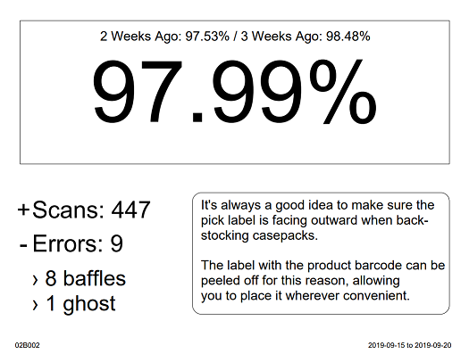

BRLA by Backroom Aisle Sheets

This tool will create a sheet for each backroom aisle in your selected store.
Available options:
Create a BRLA sheet for each backroom
Create a PDF for each tier of BRLA (green, yellow, red)
Complete the following steps:
Head to
BRLA by Backroom Aisle
Click
Filter By
and filter by your Store
(Optional) You may also filter by Backroom and Backroom Aisle to show only those you wish to print
Click on the three vertical dots near the upper-right corner and select
Export to CSV
Click here to select the exported CSV